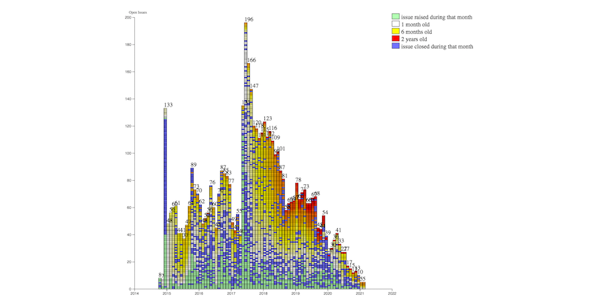

15 Jan.: participation registration opens for the #W3CWorkshop on Wide Color Gamut (WCG) and High Dynamic Range (HDR) for the Web
https://twitter.com/w3c/status/1341743411871817728
🗓️ January@VirtualW3C: Happy new year 2021 🔆! https://www.w3.org/participate/eventscal.html
https://twitter.com/w3cdevs/status/134609996968250983230 Jan.: deadline to submit a proposal for a talk for the #W3CWorkshop on WCG and HDR for the Web. Do apply if you think you have a perspective worth sharing with the broader community! See proposed topics: https://www.w3.org/Graphics/Color/Workshop/index.html#topics
https://twitter.com/w3cdevs/status/134609997356225740828 Jan.: @sabouzah keynotes at the 'Media for All 9' online conference on what #accessibility means in the hybrid environment of Web and broadcast @UABBarcelona https://jornades.uab.cat/media4all9/content/keynote-1
https://twitter.com/w3cdevs/status/1346099971431477248Members of the @w3c Inclusion and Diversity Community Group (IDCG) are holding open office hours to chat with people from under-represented groups who would like to know how to get involved in W3C, but do not know where to start - see the volunteers list: https://w3c.github.io/idcg/office-hours.html https://twitter.com/w3c/status/1346416032509030400
https://twitter.com/w3cdevs/status/1346419371799928834The recently published @w3c AudioBooks #WebStandard has been translated into Traditional Chinese: https://dpublishing.github.io/audiobooks-specs-tc/audiobooks.html Thank you @taiwandigital! https://twitter.com/w3c/status/1346488241315311616
Check also this translation into Traditional Chinese of a @w3cpublishing Note: https://dpublishing.github.io/audiobooks-specs-tc/lpf.html
https://twitter.com/w3c/status/1346654260151386116
https://twitter.com/w3cdevs/status/1346494724702662663Congratulations to Amy Guy (@digitalbazaar), Sangwhan Moon @sangwhanmoon (#W3CInvitedExpert), Theresa O'Connor @hober (@Apple), and Lea Verou @LeaVerou (#W3CInvitedExpert) for their election to the @tag! https://twitter.com/w3c/status/1347143773457969157
This is the result of an election started last month: https://twitter.com/w3cdevs/status/1336266702548590593
https://twitter.com/w3cdevs/status/1347145688476487685The recently started EPUB 3 #WorkingGroup (https://www.w3.org/groups/wg/epub) is focusing on pushing #ePub reading systems interoperability to the next level of robustness @w3cpublishing
https://twitter.com/w3c/status/1294181314581725184 https://twitter.com/w3c/status/1348910451413966849
To learn more on the history of #ePub and plans for the future, catch up with this presentation made during last #w3cTPAC
https://youtu.be/ILcY9DCs1i0
https://twitter.com/w3cdevs/status/1348960182739427328Today's published #FirstPublicWorkingDrafts are the first steps of EPUB 3.3 towards standardization. If you want to contribute to improving #ePub interop, heads to the spec repo! https://github.com/w3c/epub-specs/ #timetogiveinput
https://twitter.com/w3cdevs/status/1348960189546962944Since 1996, color on the Web has been locked into a narrow-gamut, low dynamic-range colorspace called sRGB. A virtual #W3CWorkshop is organized in April-May 2021 to discuss the #Web standardization: https://www.w3.org/Graphics/Color/Workshop/
Content for the Web needs to be adaptable for different gamuts, different peak luminances, and a very wide range of viewing conditions. @w3c invites browser vendors, content creators, color scientists, and other experts to submit a proposal for a talk
https://twitter.com/w3cdevs/status/1346099973562257408
https://twitter.com/w3cdevs/status/1349019020201230336... and CSS Color 5 which adds color mixing and color modification functions to #CSS, using CIE LCH (Luminance, Chroma, Hue) as the primary model: https://drafts.csswg.org/css-color-5/
https://twitter.com/w3cdevs/status/1349019029088956424Specifications are in the works @w3c such as #CSS Color 4 which allows specifying colors in other colorspaces than sRGB: https://drafts.csswg.org/css-color-4/
https://twitter.com/w3cdevs/status/1349019026245242889... as explained by @LeaVerou in this nice article: https://lea.verou.me/2020/04/lch-colors-in-css-what-why-and-how/
https://twitter.com/w3cdevs/status/1349019032364724224To help understand what next steps are envisioned to enable Wide Color Gamut #WCG and High Dynamic Range #HDR on the #OpenWebPlatform, read this note from the Color on the Web #CommunityGroup: https://w3c.github.io/ColorWeb-CG/
https://twitter.com/w3cdevs/status/1349019035510468613... and watch @svgeesus' presentation at last #ICCDevCon 2020: "Color on the Web and Broadcast" - https://youtu.be/32LGlKwACfI
https://twitter.com/w3cdevs/status/1349019038899437572#Wikipedia20Â
Happy birthday! https://twitter.com/webfoundation/status/1350011964605415426
https://twitter.com/w3cdevs/status/1350786335867457542The @w3c #WebStandard "Publication Manifest" has been translated into Japanese: http://www.asahi-net.or.jp/~ax2s-kmtn/internet/publishing/REC-pub-manifest-20201110.html Thank you @omnidirect! #audiobooks #html5j #dotHTML5 #w3c_keio @w3cpublishing #translation https://twitter.com/omnidirect/status/1349683082262056961
https://twitter.com/w3cdevs/status/1351093534594576387This new #CSS #FirstPublicWorkingDraft proposes new ways to manage style sheets: with cascade layers, authors can create layers to represent element defaults, 3rd-party libraries, override styles, etc. #timetogiveinput https://twitter.com/w3c/status/1351439536769933312
https://twitter.com/w3cdevs/status/1351470396147642368#MiniApps are small, install-free, fast-loading programs that run inside a larger native application or directly run in the operating system. They leverage both Web technologies like #CSS and #JavaScript and the capabilities of native apps. https://twitter.com/w3c/status/1351539778857164801
To enhance the interoperability between MiniApp platforms, the @w3c Chinese Web #InterestGroup published a white paper that looks into the needs for standards in this space: https://w3c.github.io/miniapp/white-paper/
https://twitter.com/w3cdevs/status/1351546856023724032More details about the specifications that are going to be worked in this new MiniApps #WorkingGroup can be found at https://www.w3.org/blog/2021/01/w3c-launches-the-miniapps-working-group/
https://twitter.com/w3cdevs/status/1351546860935262213Contributions, feedback, etc. are welcome in the #github repo https://github.com/w3c/miniapp where one can find a FAQ https://github.com/w3c/miniapp/blob/gh-pages/docs/FAQ.md
https://twitter.com/w3cdevs/status/1351546865817444356... along with a MiniApps standardization's presentation: https://youtu.be/zNLCOPKou_Y
https://twitter.com/w3cdevs/status/1351546864202559491At last #w3cTPAC, a session was dedicated to Web #developers: "Learning from #MiniApps": https://youtu.be/6DT4yZL1GLQ
https://twitter.com/w3cdevs/status/1351546862537478144Deadline is 30 Jan.! We invite browser vendors, content creators, color scientists, and experts in other relevant areas (e.g. #accessibility, #scripting, #security, #web) to submit a proposal for a talk. https://www.w3.org/Graphics/Color/Workshop/
Learn more in thread ⤵️ https://twitter.com/w3cdevs/status/1349019020201230336
https://twitter.com/w3cdevs/status/1353718721081192448More ♥ coming to Web documentation with @OpenWebDocs! https://twitter.com/OpenWebDocs/status/1353748877111918593
.@dontcallmeDOM will represent us there to contribute to how and where investments on Web Platform documentation is needed https://www.w3.org/blog/2021/01/welcome-to-open-web-docs/
https://twitter.com/w3cdevs/status/1353750253376331778... with thanks to former editors Adam Bergkvist, @standardsplay, @anantn, Bernard Aboba and Taylor Brandstetter, and the #WebRTC #WorkingGroup chairs: Stefan Håkansson, @alvestrand, Erik Lagerway, Bernard Aboba and @jibrewery
Congrats to editors @cfluffy, Henrik Boström and @jibrewery for the newly published @w3c #WebStandard "#WebRTC 1.0: Real-Time Communication Between Browsers" https://www.w3.org/TR/webrtc/ #timetoadopt https://twitter.com/w3c/status/1354069347061399552
https://twitter.com/w3cdevs/status/13540725484520366101) The #WebRTC #WorkingGroup has been chartered since 3554 days (9 years 8 months 20 days); 257 people participated in the group at one point or another. The work happened over 57 teleconferences, 16 #f2fmeetings, and 10114 emails!
https://www.w3.org/groups/wg/webrtc
https://twitter.com/w3cdevs/status/1354072552063328256A lot of efforts went into this major specification. Here are a few figures to help understand the level of membership and community involvement:
https://twitter.com/w3cdevs/status/13540725500542320663) The spec itself is made of 55897 words, 622 lines of IDL, incl. 20 interfaces, 37 dictionaries, 22 enums with 40 normative references to @ietf RFCs, each of which is a major achievement in terms of protocol standardization
https://twitter.com/w3cdevs/status/13540725570796830722) The #GitHub repo was busy as well: with 44 contributors, there were 1282 merged pull requests, 4658 commits and 1320 resolved issues
https://github.com/w3c/webrtc-pc/
Check the evolution of spec issues for WebRTC 1.0 at https://w3c.github.io/spec-dashboard/issues.html?groupdi=47318&shortname=webrtc
https://twitter.com/w3cdevs/status/13540725548734791684) To ensure wide interop, the spec has also received lots of testing attention, with 149 test files covering 1789 test assertions developed by 61 contributors
https://github.com/web-platform-tests/wpt/tree/master/webrtc/
https://twitter.com/w3cdevs/status/1354072558799360002The @w3c #WebStandard "#RDFa Lite 1.1 - Second Edition" has been translated into Japanese: http://www.asahi-net.or.jp/~ax2s-kmtn/internet/rdf/REC-rdfa-lite-20150317.html Thank you @omnidirect ! #html5j #dotHTML5 #w3c_keio #translation https://twitter.com/omnidirect/status/1354434178708692997
https://twitter.com/w3cdevs/status/1354713202823749638🆕 @dontcallmeDOM gives a #WebRTC "tour" in this 🎬, introducing the spec's current impact on the #Web & the world, and future improvements: https://youtu.be/PXhU4zvQDdM
Find out how much effort went into the making of #WebRTC - impressive figures!
https://twitter.com/w3cdevs/status/1354072552063328256
https://twitter.com/w3cdevs/status/1354838998540279811